Real-Time Fluorometer (RTF) Alignment Procedure
Scope
This procedure provides instructions to align the AMP Incubator carousel to the Real-Time Fluorometer (RTF) modules.
Perform this procedure when any of the following service procedures have been performed:
- Carousel motor replacement (only when RTFs are installed)
- Incubator Carousel belt replacement (only when RTFs are installed)
- Incubator PCB replacement (only when RTFs are installed)
- New AMP Incubator install that includes the re-installation of pre-existing RTF modules
- New RTF installation
- RTF replacement
Required Tools and Materials
- Proper PPE
- 1x
 RTF Alignment Tool
RTF Alignment Tool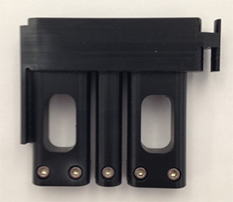
- Panther System with RTFs installed
Time Required
- 30 minutes
Procedure
|
|
WARNING—The AMP incubator contains amplicon and is a post AMP (dirty) module. Ensure safe lab practices are observed during this procedure and always wear PPE. Change gloves often, bleach tools and bench top after interaction with the AMP Incubator and always bleach tools after every service. |
|
|
WARNING—MTUs may be present in module. It is necessary to remove all MTUs to avoid contamination. |
- Put on proper PPE.
- Log in to the FSE Shield.
- Start Service Software.
- Clear all MTUs from the System.
- Start the RTF Aligner Program.
- If running System v6.2 and above, click on the RTF Aligner button from the FSE Shield and skip to Step 6.
- If running System Software below v6.2 click on the Windows Explorer button.
- Browse to the C:\PANTHER\Software\PC\Bin\ folder and execute the RTFAligner application.

Note—Do not select the RTFAligner.exe XML Configuration File. 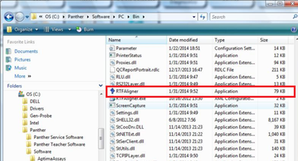
- Follow the on screen prompts and click Start button.
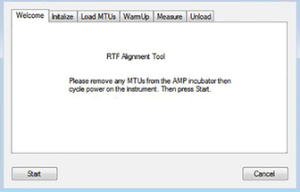
- The RTF Aligner initializes all necessary modules for RTF Alignment.
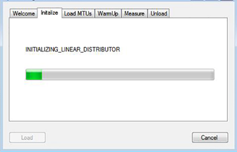
- Follow the on-screen prompts.
- If using a Panther, carefully place the RTF Alignment Tool in the Service Queue, with the MTU Multi-tube unit—Container used to process tests in the instrument. An MTU contains five separate reaction tubes. The MTU is moved through the instrument by the linear distributor and includes five tiplets for pipettiing to be used in the mag wash station. tab facing towards the inside of the system.
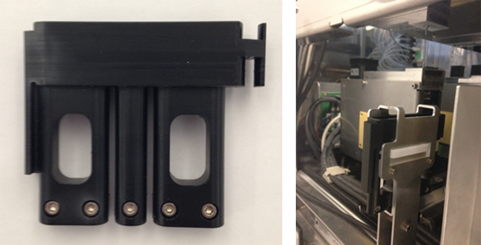
-
If using a Fusion, carefully place the RTF Alignment Tool in the Elution Station, with the MTU tab facing towards the inside of the system.
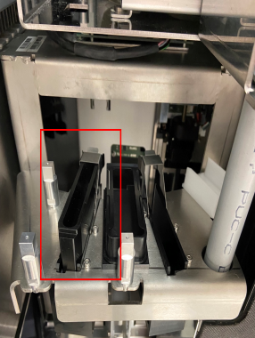
- If using a Panther, carefully place the RTF Alignment Tool in the Service Queue, with the MTU
- Press the Load Button.
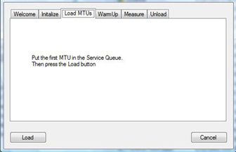
Note—If performing this procedure on a Panther, watch the Linear Distributor pick the Alignment Tool from the service queue on Panther.
If using a Panther Fusion, observe that the Alignment Tool is picked by the Rotary Distributor.
If the Alignment Tool was not picked from the Service Queue, click on Cancel to stop the procedure.
Reset the alignment tool and restart the RTF alignment procedure.
If using a Panther and the Alignment Tool is not picked again, it may be necessary to align the Service Queue to the Linear Distributor.
Expand the Distributor Teaching Without the Input Queue Auto Teach Tool dropdown and scroll down to Distributor Alignment to the Service Queue.If using a Fusion and the Alignment Tool is not picked again, it may be necessary to reteach the Rotary Distributor to Elution Station.
- Once picked, the Tool is placed in the AMP incubator. The alignment process begins after the Incubators reaches operating temperature. This alignment process takes approximately 15-20 minutes to complete.
- After the alignment process is complete, click OK to begin the unload operation. The program prompts the operator to unload the RTF Alignment Tool from the Service Queue.
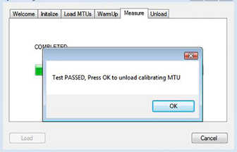
Note—If the RTF Aligner program is terminated due to process error or other interruption, then the unload process will NOT complete and the RTF Alignment Tool will be stuck in the AMP Incubator. In this case, boot up Panther Service Software and manually unload the RTF Alignment Tool from the AMP Incubator. - Remove the Tool.
- Click Cancel to exit the RTF Aligner program.
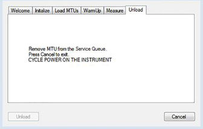
- Decontaminate the RTF Alignment Tool with 50% bleach solution followed by and DI water and ethyl alcohol.
- Power-cycle the Panther System.
- Proceed to Verification.
Verification
- Verify that there is a measurements_mmddyyyy_xxxxxx.csv file (or files) located in the C:\RTF1 Measurements folder. This confirms that the program took readings from the RTF1 measurements and altered the AMP Incubator parameters.
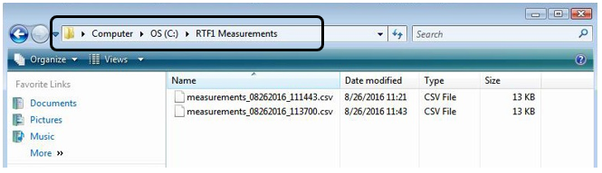
- Copy the measurements_XXXXXXXX_XXXXXX.csv file to a portable drive and open the file in excel on a laptop/computer.
- For “Performing forward sweep” -
- Select the data points under the “RTF1 Ch1”, “RTF1 Ch2”, “RTF1 Ch3”, “RTF1 Ch4” and “RTF1 Ch5” column and plot a curve by Inserting a “2-D Line” chart “Line with Markers” as shown in the screenshot below (for reference only):
- The plotted Chart should have a curve profile as shown in the screen shot above with a per channel (Ch1 – Ch5) signal range of >300.
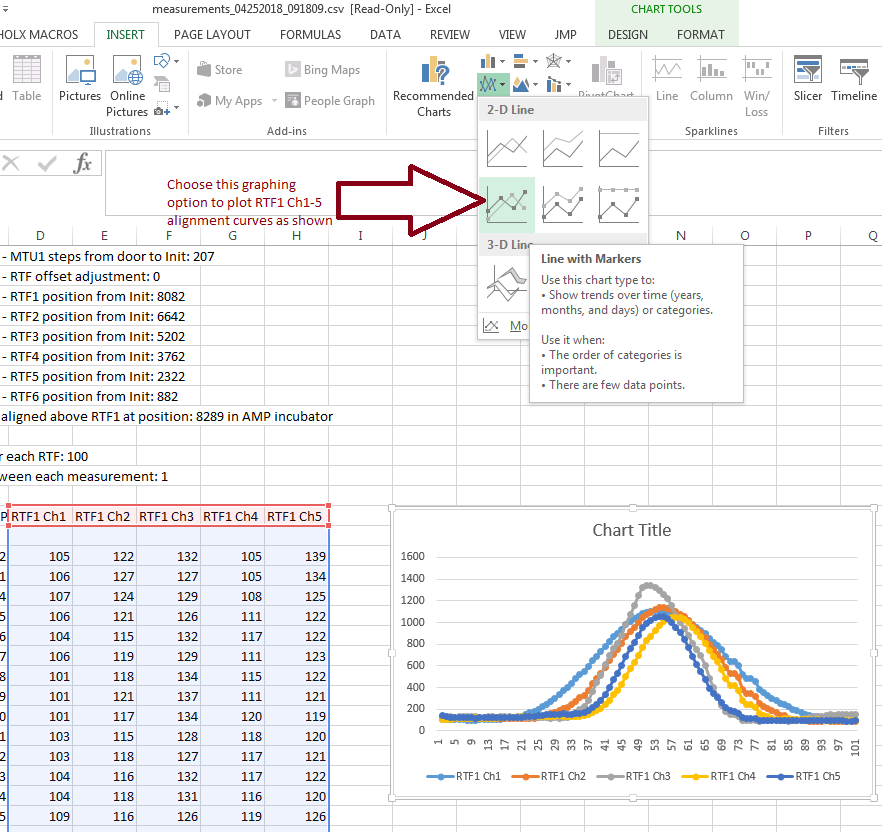
- Scroll down the csv file, to where it says, “Performing backward sweep” and select the data points in the last 5 columns and plot a curve by Inserting a “2-D Line” chart “Line with Markers” as shown in the screenshot referenced above. The plotted Chart should have a curve profile as shown in the screen shot above with a per channel (Ch1 – Ch5) signal range of >300.
- Scroll down the csv file, to where it says, “Verification Run Starts” and select the data points in the last 5 columns and plot a curve by inserting a “2-D Line” chart “Line with Markers” as shown in the screenshot referenced above. The plotted Chart should have a curve profile as shown in the screen shot above with a per channel (Ch1 – Ch5) signal range of >300.
- Repeat the alignment if the peak of the signal is not greater than 300.
Note—If the peak DOES NOT exist, then the alignment procedure failed and needs to be redone. This could be due to the tool not being picked or placed.
- Find the following lines and record their values. Values shown in the images below are examples.
Note: The following can be found after the backward sweep in Verification Step 2.d and before the verification in Verification Step 2.e.

- Open Service Software, and on the Incubator main tab, initialize the AMP incubator.
- Go to the Parameter tab and ensure Amp Incubator ID 0x22 is selected in the Device drop-down menu.
-
For System Software v6.2 and ABOVE: Input “138” in the Parameter field. Click on the Read button and ensure the parameter value matches the P138 value recorded from the .csv file. Repeat and ensure that parameters 139 through 143 match the values in the .CSV file.
-
For System Software BELOW v6.2: Input “138” in the Parameter field. Click on the Read button and ensure the parameter value matches the P138 value recorded from the .csv file. Repeat and ensure that parameters 140 and 142 match the values in the .CSV file.
-
Attach the measurements_XXXXXXXX_XXXXXX.csv file to the SR notes.
- Verification is complete.
 button at the top of the page to send feedback, comments, or change requests.
button at the top of the page to send feedback, comments, or change requests.